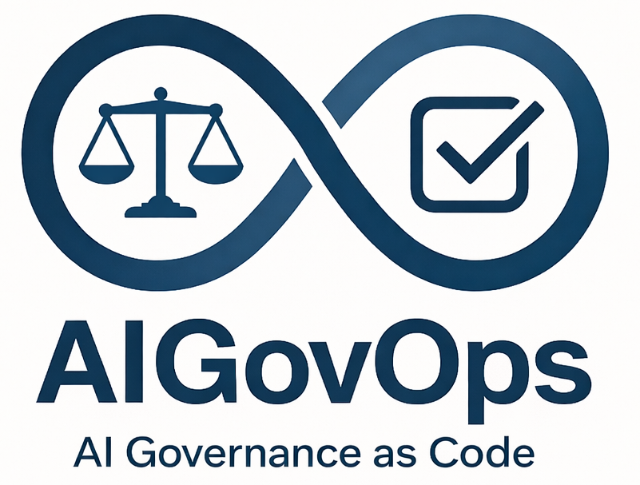

From Intentions to Evidence
At the AiGovOps Foundation, we believe that true accountability in artificial intelligence must move beyond broad declarations of intent and reach a status of verifiable evidence. While many ethical frameworks stop at theory, AiGovOps starts at the technical evidence—transforming noble principles into measurable, operational outcomes through rigorous auditing and active oversight and automated production code.
AI GovOps is governance that runs like engineering. It is the discipline of automating every element of safe, reliable, and compliant AI — from design through deployment, through operations, and through sunsetting.
That means governance versioned like code, tested before deployment, observable in production, and auditable by default. It borrows what worked in DevOps and DevSecOps — controls embedded early, automation over intention, evidence captured continuously — and applies those lessons to AI risk.
We don't prescribe specific tools or solutions. We build a community of practitioners who identify, challenge, and advance the technologies that make AI governance operational.

Every AI system deployed without automated governance creates technical debt that compounds. Every compliance framework that exists only as a PDF is a liability waiting to surface. As regulatory requirements accelerate globally and AI scales into critical systems, the gap between governance intent and operational reality is widening — not closing. Organizations that embed governance into their deployment pipelines now will lead. Those that don't will spend the next decade retrofitting.
Embedding ethical frameworks and compliance checks directly into production pipelines as automated, testable code — so governance ships with the product, not after it.
Closing the gap between governance policy on paper and governance reality in production systems — identifying and resolving the silent liabilities that compound with every deployment.
Automating regulatory alignment across jurisdictions so compliance scales with deployment, not against it — turning regulatory requirements into executable, auditable workflows.
Building practitioner-led tools, practices, and open standards through a cross-functional community — because governance that works in production has to be built by the people who ship to production.
In-person gatherings where practitioners share real-world governance implementation stories.
Candid conversations with the people building and regulating AI systems.
We're building a cross-functional community of IT and Responsible AI executives, technology founders, researchers, policymakers, and investors — united around one goal: accelerating the creation and adoption of AI governance automation.
Facilitated conversations connecting leaders across industries and disciplines.
Moderated spaces for ongoing peer-to-peer knowledge sharing.
Regular insights on governance automation, compliance shifts, and community news.
Multi-day immersive events for hands-on governance skills development.
We'd love to hear from you. Send us a message and we'll respond as soon as possible.
AiGovOps Foundation was co-founded by Ken Johnston and Bob Rapp, two leaders in AI, data science, and enterprise transformation. Ken contributes deep expertise in data, analytics, and AI leadership, having held senior positions at organizations including Microsoft, Ford, and CEO of Autonomic.ai. Bob brings extensive experience in creating high-performing AI teams previously at Vodafone, IBM Watson, GE Healthcare, Microsoft and now at General Motors, focusing on building value through smart, fast, and global AI/ML/data investments. Together, they are committed to advancing responsible AI governance and helping organizations navigate the evolving AI landscape.